Actividad 16: La Verdad en los Bits — Adquisición Forense con FTK Imager
Introducción
El análisis forense digital comprende el conjunto de metodologías y procedimientos técnicos orientados a identificar, adquirir, preservar, analizar y presentar evidencia digital de manera que mantenga su valor probatorio ante un marco legal o institucional. Cuando ocurre un incidente de seguridad —definido como cualquier evento que vulnera las políticas de seguridad de un sistema de información—, el especialista forense debe intervenir garantizando en todo momento que los datos originales no sufran alteración alguna.
Parte 1: Procedimiento de Adquisición Forense
En atención al requerimiento del Laboratorio de Informática Forense (LIF) de la UPSLP para el caso InfoCrim-01_21.11.2023 (análisis de incidente de fraude bancario), se realizó la adquisición forense de una unidad de memoria USB empleando el software AccessData FTK Imager.
1. Apertura de AccessData FTK Imager: El programa se instaló y ejecutó con permisos de Administrador en el equipo local de cómputo. Al abrir la aplicación se verificó el despliegue de su ventana principal antes de conectar el medio de almacenamiento.
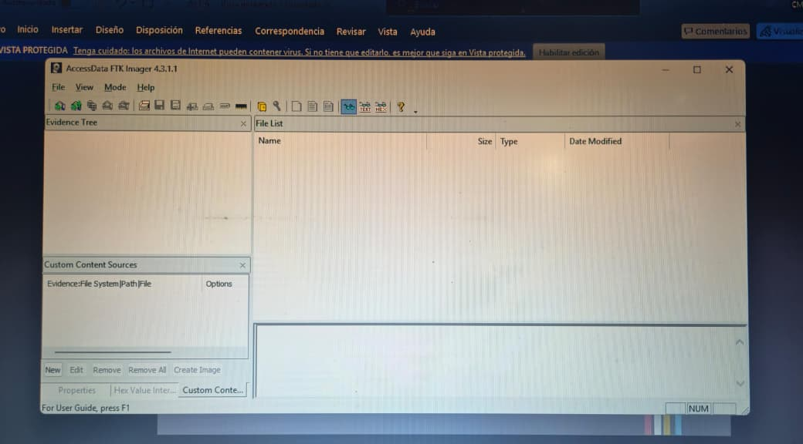
2. Conexión del medio de evidencia: Se conectó la memoria USB de evidencia al puerto del ordenador sin abrir ni explorar sus archivos en Windows. Posteriormente, desde la barra de menú superior se seleccionó File -> Create Disk Image...
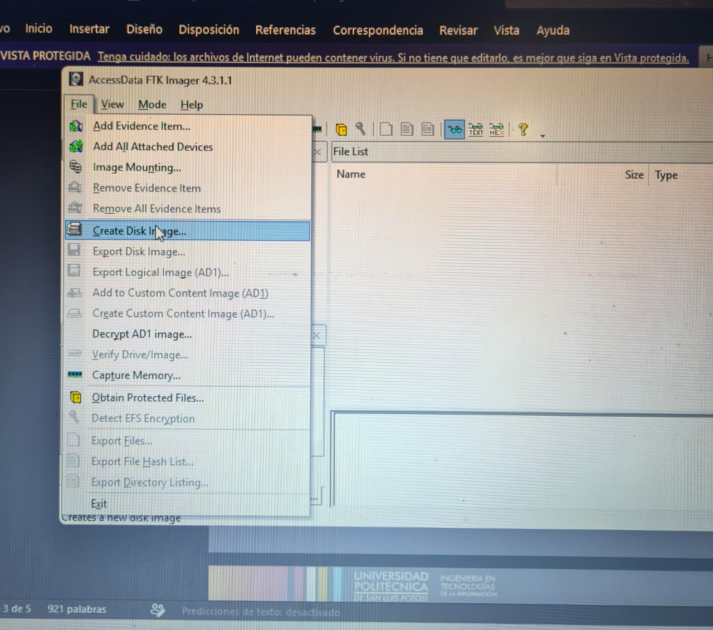
3. Selección de la unidad física: En la ventana Select Source se seleccionó la opción Physical Drive y se pulsó Siguiente. Se eligió Physical Drive porque una adquisición forense bit a bit requiere clonar el dispositivo físico completo, incluyendo la tabla de particiones, el espacio no asignado y los posibles archivos eliminados.
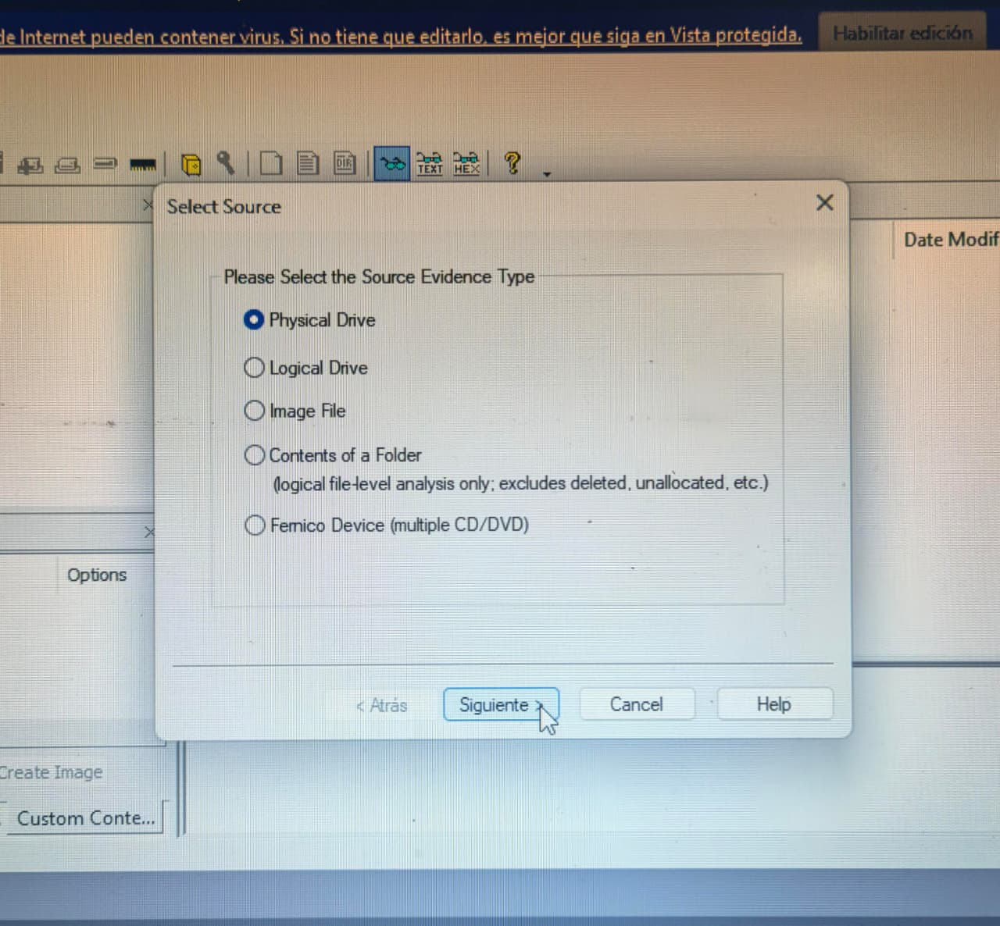
En el cuadro desplegable Source Drive Selection se identificó la memoria USB conectada (\\.\PHYSICALDRIVE1 - KINGSTON DataTraveler SE1 USB Device).
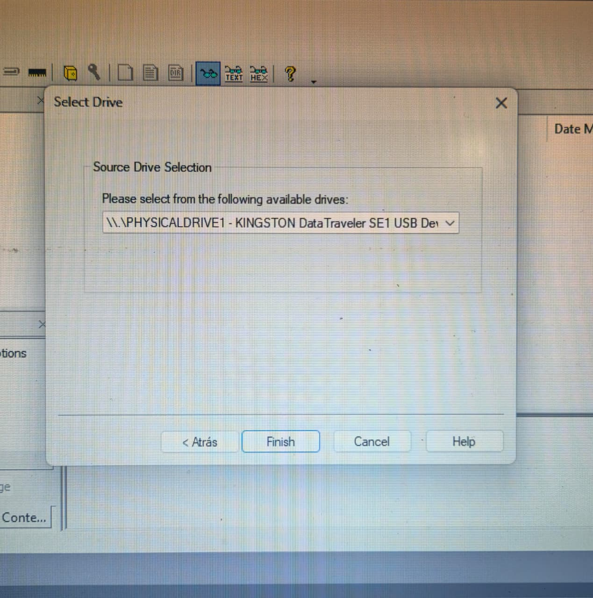
4. Configuración del formato Raw: Dentro de la ventana Create Image se pulsó el botón Add... y en la lista Select Image Type se seleccionó el formato Raw (dd), el cual genera una copia cruda sector por sector de lectura universal sin aplicar compresión ni encabezados propietarios.
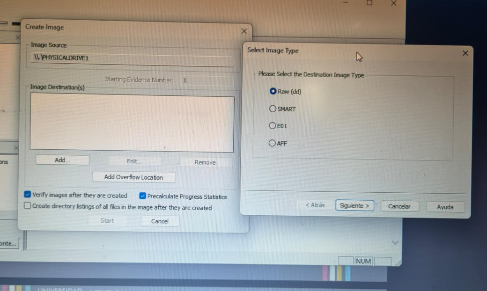
Al avanzar a la ventana Evidence Item Information, se registraron los metadatos oficiales del caso para documentar la cadena de custodia (Case Number: InfoCrim-01_21.11.2023, Evidence Number: 00 (Original Adq), Unique Description: CNO IV - análisis de incidente de fraude bancario, Examiner: Gonzalez Espinoza Karla Vanessa, Notes: Adquisición realizada en LIF de la Upslp):
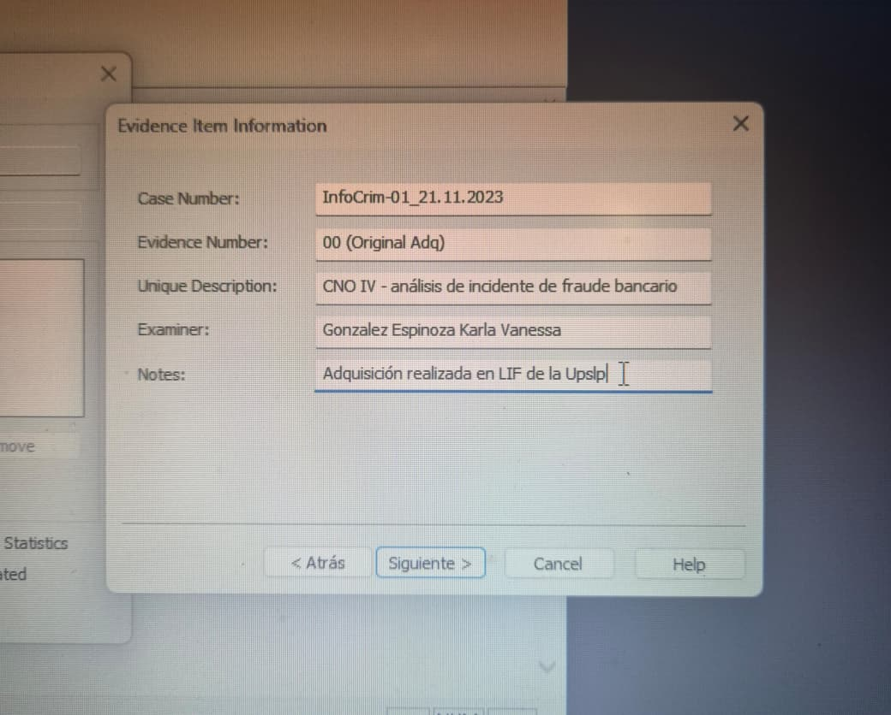
5. Configuración del directorio destino y fragmentación: En la ventana Select Image Destination se seleccionó mediante Browse la carpeta InfoCrim13 creada en el Escritorio del equipo local. En el campo Image Filename (Excluding Extension) se ingresó el identificador infocrim_GEKV con un tamaño de fragmento de 1500 MB y compresión 0.
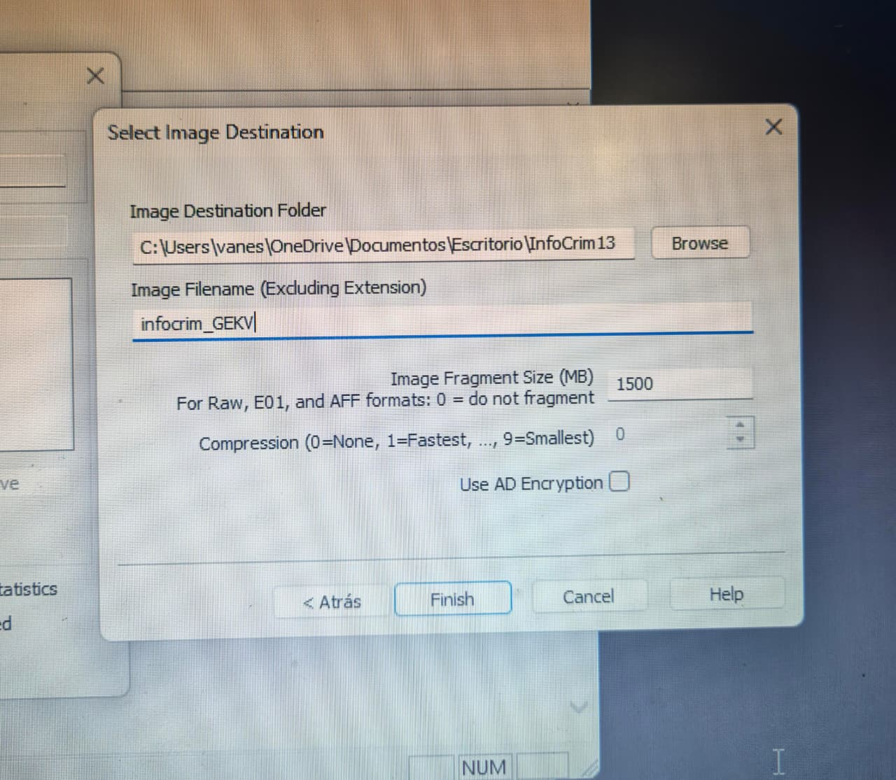
6. Ejecución de la adquisición: Antes de iniciar el copiado en la ventana Create Image, se confirmó que la casilla Verify images after they are created estuviera activa para que FTK Imager calculara y confrontara automáticamente las firmas MD5 y SHA-1 al concluir la lectura.
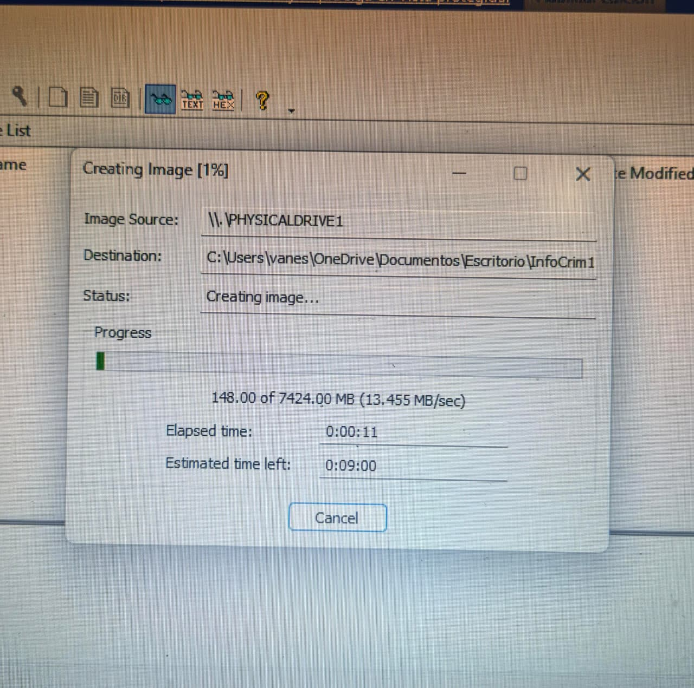
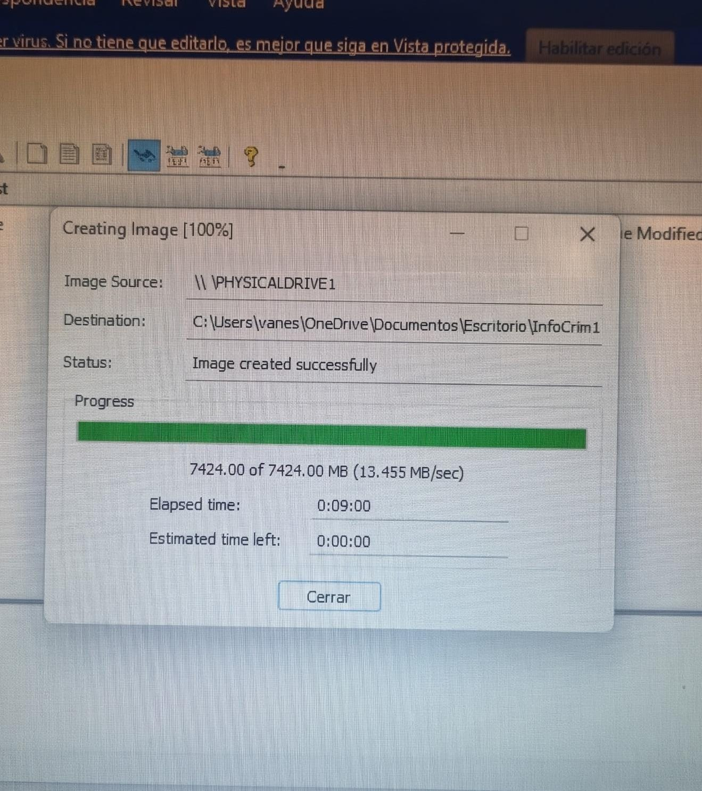
Parte 2: Cuestionario Técnico de Formatos Forenses
1. ¿Qué tipo de formato se refiere el Raw (dd)?
El formato Raw (dd), también conocido como imagen cruda o bit-stream image, es una copia exacta sector por sector (bit a bit) del dispositivo de almacenamiento sin ningún tipo de compresión, cifrado ni encabezados propietarios integrados en el archivo. Su nombre proviene de la herramienta tradicional dd (data definition / disk dump) de sistemas Unix/Linux. Su principal cualidad es que es un formato de lectura universal compatible con prácticamente cualquier herramienta de análisis forense. Dado que no almacena metadatos internos ni firmas criptográficas dentro del propio archivo binario, ocupa exactamente el mismo tamaño que la capacidad física de la unidad origen y guarda los datos del caso y los hashes en un archivo de texto (.txt) separado (Carrier, 2005; Nelson et al., 2019).
2. ¿Qué tipo de formato se refiere el E01?
El formato E01 corresponde al estándar Expert Witness Compression Format (EWF), desarrollado originalmente por Guidance Software para su software EnCase. Se trata de un formato contenedor especializado para informática forense que encapsula la copia bit a bit del medio junto con un encabezado interno (header) donde se guardan los metadatos del caso (número de caso, número de evidencia, nombre del examinador, fecha y notas). A diferencia del formato Raw, el formato E01 permite comprimir los bloques de datos (reduciendo notablemente el tamaño de la imagen cuando existen sectores vacíos) e integra sumas de verificación de redundancia cíclica (CRC) por cada bloque de 64 sectores (32 KB), además del hash MD5/SHA-1 en el pie del archivo (footer), garantizando un control de integridad interno (AccessData, 2020; Johansen, 2020).
3. ¿Cuál es la diferencia entre un formato SMART y un formato E01?
Aunque tanto SMART como E01 se basan en la especificación original Expert Witness Format (EWF) y comparten capacidades de compresión, fragmentación y sumas de verificación CRC internas, presentan diferencias clave en su origen, estructura y vigencia:
- Origen y extensión: El formato
SMART(que genera archivos con extensión.s01,.s02, etc.) fue creado por ASR Data para su suite forense SMART enfocada en sistemas Linux, mientras que el formatoE01(.E01,.E02, etc.) fue diseñado por Guidance Software para EnCase. - Metadatos e interoperabilidad: El formato
SMARTalmacena información de encabezado más básica y hoy se considera un formato legado (antiguo) con soporte reducido en herramientas modernas. En cambio, el formatoE01posee una estructura de metadatos estandarizada y completa, consolidándose actualmente como el estándar de facto a nivel internacional en los laboratorios de informática forense (AccessData, 2020; Metz, 2014; Nelson et al., 2019).
Parte 3: Verificación de Integridad y Resultados de la Adquisición
Al concluir la adquisición y la verificación criptográfica en FTK Imager se obtuvieron los siguientes resultados finales (presentados en formato de texto y respaldados con sus capturas de pantalla):
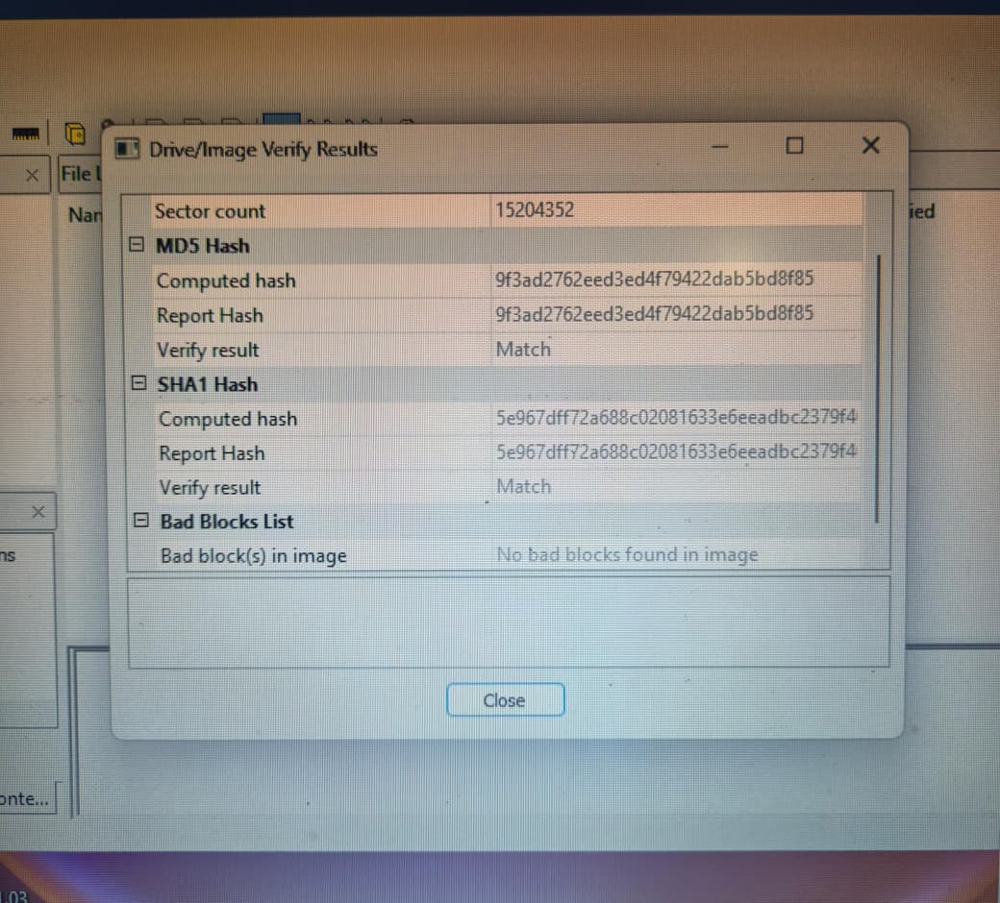
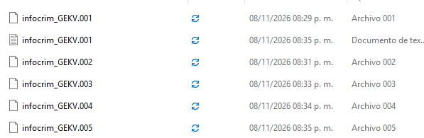
Contenido del archivo de auditoría (infocrim_GEKV.001.txt):
Created By AccessData® FTK® Imager 4.3.1.1
Case Information:
Acquired using: ADI4.3.1.1
Case Number: InfoCrim-01_21.11.2023
Evidence Number: 00 (Original Adq)
Unique description: CNO IV - análisis de incidente de fraude bancario
Examiner: Gonzalez Espinoza Karla Vanessa
Notes: Adquisición realizada en LIF de la Upslp
--------------------------------------------------------------
Information for C:\Users\vanes\OneDrive\Documentos\Escritorio\InfoCrim13\infocrim_GEKV:
Physical Evidentiary Item (Source) Information:
[Device Info]
Source Type: Physical
[Drive Geometry]
Cylinders: 946
Tracks per Cylinder: 255
Sectors per Track: 63
Bytes per Sector: 512
Sector Count: 15,204,352
[Physical Drive Information]
Drive Model: KINGSTON DataTraveler SE1 USB Device
Drive Serial Number: 0018F30C97F6AC91D1C10120
Drive Interface Type: USB
Removable drive: True
Source data size: 7424 MB
Sector count: 15204352
[Computed Hashes]
MD5 checksum: 9f3ad2762eed3ed4f79422dab5bd8f85
SHA1 checksum: 5e967dff72a680c02081633e6eeadbc2379f40a9
Image Information:
Acquisition started: Sun Nov 8 20:28:06 2026
Acquisition finished: Sun Nov 8 20:35:32 2026
Segment list:
C:\Users\vanes\OneDrive\Documentos\Escritorio\InfoCrim13\infocrim_GEKV.001
C:\Users\vanes\OneDrive\Documentos\Escritorio\InfoCrim13\infocrim_GEKV.002
C:\Users\vanes\OneDrive\Documentos\Escritorio\InfoCrim13\infocrim_GEKV.003
C:\Users\vanes\OneDrive\Documentos\Escritorio\InfoCrim13\infocrim_GEKV.004
C:\Users\vanes\OneDrive\Documentos\Escritorio\InfoCrim13\infocrim_GEKV.005
Image Verification Results:
Verification started: Sun Nov 8 20:35:34 2026
Verification finished: Sun Nov 8 20:35:50 2026
MD5 checksum: 9f3ad2762eed3ed4f79422dab5bd8f85 : verified
SHA1 checksum: 5e967dff72a680c02081633e6eeadbc2379f40a9 : verified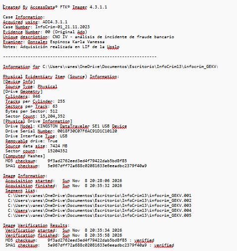
Parte 4: Informe Ejecutivo y Líneas de Investigación
1. Descripción ejecutiva del proceso y resultados
Como parte del protocolo de respuesta a incidentes del Laboratorio de Informática Forense (LIF) de la UPSLP para el caso InfoCrim-01_21.11.2023, relativo a un incidente de fraude bancario, se efectuó la adquisición forense física (bit a bit) de la unidad de almacenamiento USB identificada como Evidencia 00. El procedimiento se ejecutó utilizando AccessData FTK Imager, configurando una imagen en formato crudo universal Raw (dd) segmentada en bloques de 1500 MB dentro del directorio InfoCrim13.
El copiado abarcó la totalidad de los sectores físicos de la memoria USB sin presentar bloques dañados. Al término de la captura, se verificó la integridad matemática de la imagen mediante los algoritmos criptográficos MD5 y SHA-1, obteniendo una coincidencia exacta (Match) entre los datos leídos del dispositivo origen y los fragmentos generados. Toda la trazabilidad técnica (geometría de la unidad, número de serie, marcas de tiempo y firmas hash) quedó asentada en el archivo de auditoría infocrim_GEKV.001.txt que se anexa a esta entrega.
2. Análisis crítico y relación con el contexto de la investigación
En una investigación de fraude bancario, contar con una adquisición física (Physical Drive) en lugar de una simple copia lógica de archivos resulta determinante. Los involucrados en ilícitos financieros suelen eliminar estados de cuenta, registros de transferencias, hojas de cálculo o comunicaciones comprometedoras antes de entregar o abandonar un dispositivo. Al haber copiado bit a bit todos los sectores de la unidad USB, la imagen obtenida preserva intacto el espacio no asignado (unallocated space) y el espacio desperdiciado de clúster (slack space), permitiendo recuperar evidencia eliminada sin poner en riesgo la muestra original. Asimismo, la coincidencia de los hashes MD5 y SHA-1 brinda certeza técnica y legal de que la evidencia recolectada en el LIF no fue alterada.
3. Propuesta de líneas de investigación a seguir
- Recuperación de evidencia eliminada (File Carving): Generar una copia de trabajo de los segmentos
.001y montarla en modo solo lectura dentro de una suite de análisis forense (comoAutopsyoFTK) para rastrear y reconstruir documentos financieros, archivos PDF, bases de datos o libros de Excel borrados en el espacio no asignado. - Inspección de metadatos y marcas de tiempo (
MACB): Analizar las fechas de Modificación, Acceso y Creación del sistema de archivos, así como los metadatos internos de autoría en documentos ofimáticos, para identificar usuarios clave, nombres de equipos involucrados y establecer una línea de tiempo precisa de las operaciones del fraude. - Detección de ocultamiento de información: Verificar firmas de encabezados de archivos (magic numbers) frente a sus extensiones para detectar si se cambiaron extensiones deliberadamente o si existen contenedores cifrados o particiones ocultas dentro de la memoria USB.
Referencias
- AccessData. (2020). FTK Imager user guide (Versión 4.5). Exterro. https://www.exterro.com/ftk-imager
- Carrier, B. (2005). File system forensic analysis. Addison-Wesley Professional.
- Johansen, G. (2020). Digital forensics and incident response: Incident response techniques and procedures to respond to modern cyber threats (2.ª ed.). Packt Publishing.
- Kent, K., Chevalier, S., Grance, T., & Dang, H. (2006). Guide to integrating forensic techniques into incident response (NIST Special Publication 800-86). National Institute of Standards and Technology. https://doi.org/10.6028/NIST.SP.800-86
- Nelson, B., Phillips, A., & Steuart, C. (2019). Guide to computer forensics and investigations (6.ª ed.). Cengage Learning.